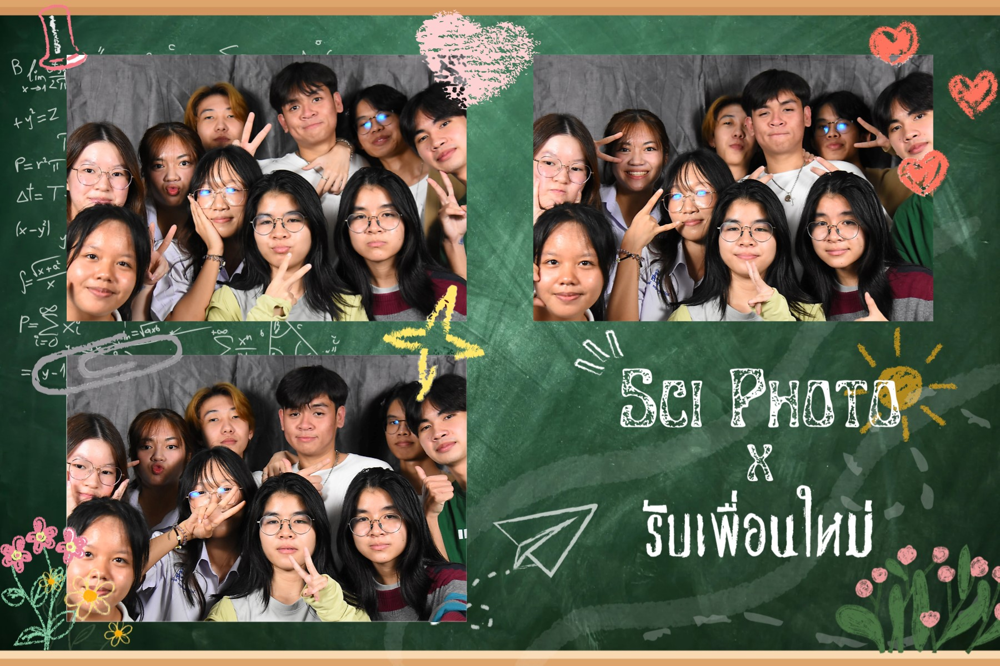

My Journey
First Year
ในปีแรกของ ฉันมุ่งเน้นไปที่การปรับตัวเข้ากับสภาพแวดล้อมการเรียนรู้ใหม่ๆ ฉันได้เรียนวิชาพื้นฐานและได้ลองเขียนโค้ด นี่เป็นช่วงเวลาที่ฉันได้ปรับการจัดการเวลาและความรับผิดชอบของตัวเอง และได้พบเพื่อนใหม่ๆ
Second Year
ในปีที่สอง เริ่มที่จะลงลึกในสาขาวิชามากขึ้นและเรียนภาษาเพิ่มขึ้น เริ่มมีงานกลุ่มให้ได้ลองทำที่ช่วยให้ฝึกทักษะการทำงานเป็นทีม เริ่มหาความชอบของตนเองว่าชอบทางไหนในสายงานนี้ และคิดว่าจะเลือกทำหัวข้อพิเศษหรือเลือกแผนสหกิจThird Year
ในปีที่สาม มีทักษะและประสบการณ์ในการเขียนโค้ดเพิ่มขึ้น มีงานกลุ่มให้ทำมากขึ้น ตัดสินใจว่าจะเรียนควบโทหรือไม่ และหากเรียน จะเรียนต่อด้านไหนFourth Year
ในปีที่สี่ มุ่งเน้นที่การเตรียมตัวเข้าสู่อาชีพ